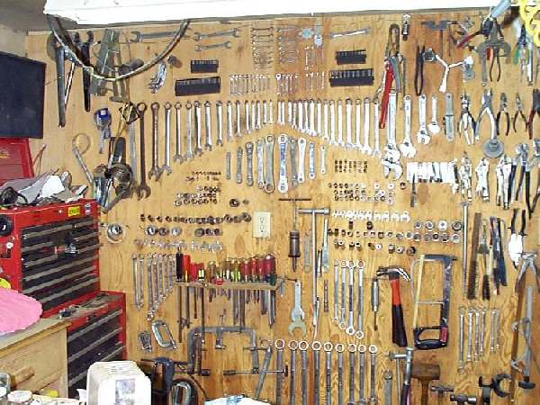
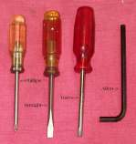
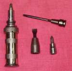
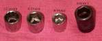
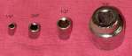
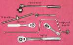
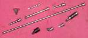
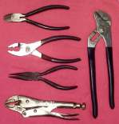
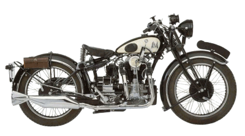
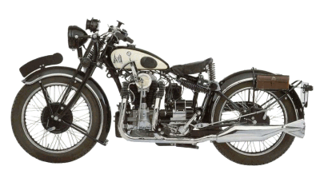

TOOLS

¶ Tools. You have to have lots of tools to work on motorcycles. So what does that mean? Do you have to go out and buy a $2000 master tool set to do good work? No, not at all. A basic tool kit is all you need. You can add tools as you need them. It's always nice to have pretty, shiny, new tools, but hey, the bolts don't care. They'll come apart with old tools, same as new. Start looking around... garage sales, 2nd hand stores...tell your friends you're looking for some tools. Most mechanics start out with old, junky tools and upgrade as money allows. This means there are lots of old tools floating around. Maybe they will sell cheap or even give them to you, so keep your eyes open for them.
If you are really new to tools, a good place to learn about what is out there is a tool catalog. Sears Craftsman tools put out a free one that is a good place to start. Almost all my tools are Craftsman. There is a good reason for that...they are guaranteed forever (well, maybe just till they go out of business.) If I break one, I just take it back to Sears, and they give me a new one. I've fished them out of dumpsters, bought broken ones from junk yards and take them back and I get a new one. There are others who give a lifetime warrenty, but I always know where a Sears is. I don't always know where the other guys are.
UPDATE: Sears seems to be slowly dying but you can still get Craftsman tools and replacements from Ace Hardware and Lowes.
To start with you're going to need some wrenches. Wrenches come in lots of types
and sizes. The handiest ones are Combination Wrenches. You will need sizes 6mm through 14mm, 17mm and 19mm to start. Two sets are nice, one for
the nut and one for the bolt head. A set of small, open end ignition wrenches is handy. Especially if the bike you are working on has points.
A set of inch (US) wrenches would be good too.
The handiest ones are Combination Wrenches. You will need sizes 6mm through 14mm, 17mm and 19mm to start. Two sets are nice, one for
the nut and one for the bolt head. A set of small, open end ignition wrenches is handy. Especially if the bike you are working on has points.
A set of inch (US) wrenches would be good too.


 
 

 No good mechanic ever uses a Crescent Wrench...but we all have a good selection of them hidden in our tool box! Now you would think that with as many
tools as I have, I would always have exactly the right wench for every nut and bolt. But, you would be wrong. I am always running across
bolts that nothing fits. For those bolts, I keep the trusty Crescent Wrench. So tell everyone you never use a Crescent Wrench and keep a good supply of them.
No good mechanic ever uses a Crescent Wrench...but we all have a good selection of them hidden in our tool box! Now you would think that with as many
tools as I have, I would always have exactly the right wench for every nut and bolt. But, you would be wrong. I am always running across
bolts that nothing fits. For those bolts, I keep the trusty Crescent Wrench. So tell everyone you never use a Crescent Wrench and keep a good supply of them.
 If it's a British bike like Triumph, BSA, Norton and the like, it will have nuts and bolts that are British Standard. These are also called Whitworth. You will need a set of these Wrenches if you work on British stuff.
Speaking about funny sized bolts, from time to time you will run across bolts and nuts that are rounded off or it's a weird size. If you measure the
bolt and compare it with this chart, you will be able to select a socket or wrench that is pretty close in size. Print it out on card stock, laminate it and put it in your toolbox. My thanks to Flanders Co., a motorcycle parts distributor, for giving me permission to reprint this chart from their catalog.
If it's a British bike like Triumph, BSA, Norton and the like, it will have nuts and bolts that are British Standard. These are also called Whitworth. You will need a set of these Wrenches if you work on British stuff.
Speaking about funny sized bolts, from time to time you will run across bolts and nuts that are rounded off or it's a weird size. If you measure the
bolt and compare it with this chart, you will be able to select a socket or wrench that is pretty close in size. Print it out on card stock, laminate it and put it in your toolbox. My thanks to Flanders Co., a motorcycle parts distributor, for giving me permission to reprint this chart from their catalog.
There are lots of other tools out there and the ones you will want will depend on the job you are doing. If you are just starting your tool box, here is what I would consider a good start.
The list is endless, but at least now you have a place to start.
Someone requested an easy way to print out the wrench referance. Here it is, a bit small but printable. Remember to right click and left click "Save Target As..."

 |
 |

Copyright © 1999-2002 dansmc.com. All rights reserved. Updated in 2019